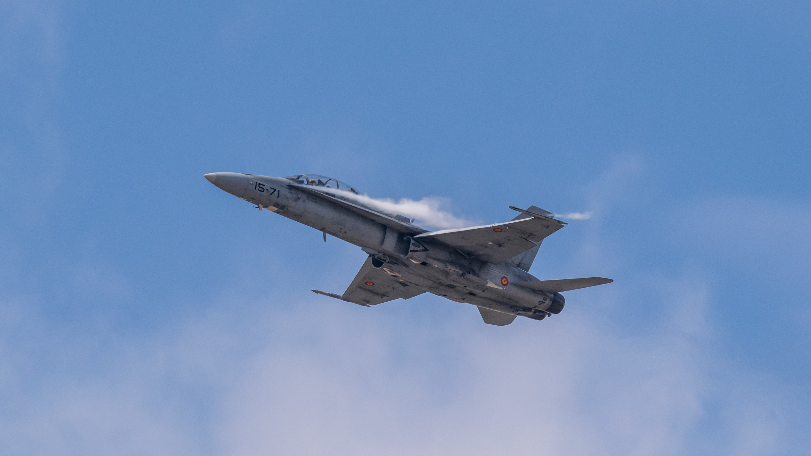

An air force in the broadest sense is the national military branch that primarily conducts aerial warfare. More specifically, it is the branch of a nation's armed services that is responsible for aerial warfare as distinct from an army or navy. Typically, air forces are responsible for gaining control of the air, carrying out strategic and tactical bombing missions, and providing support to land and naval forces often in the form of aerial reconnaissance and close air support. 
| F5 | 30% |
| F15 | 30% |
| F35 | 40% |
The term air force may also refer to a tactical air force or numbered air force, which is an operational formation either within a national air force or comprising several air components from allied nations. Air forces typically consist of a combination of fighters, bombers, helicopters, transport planes and other aircraft.
Many air forces may command and control other air defence assets such as anti-aircraft artillery, surface-to-air missiles, or anti-ballistic missile warning networks and defensive systems. Some air forces are also responsible for operations of the military space and intercontinental ballistic missiles (ICBM). Some nations, principally countries who modelled their militaries along Soviet lines, have or had an air defence force which is organizationally separate from their air force.